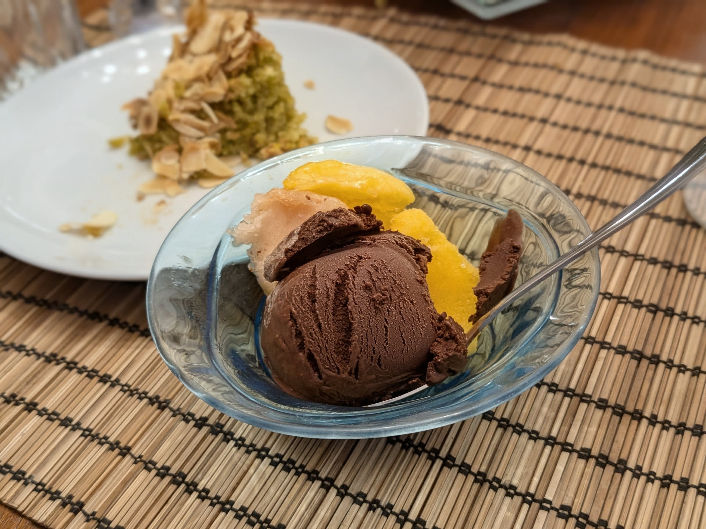

Sorbet au chocolat noir

Ici avec des sorbets à la pêche et à la mangue ; en arrière-plan, une part de gâteau à la pistache.
Pour un petit litre de sorbet :
- 550mL d'eau
- 200g de sucre
- 75g de cacao en poudre non sucré
- 170g de bon chocolat noir
- Une demi-cuillère à café d'extrait de vanille
- Une pincée de sel
- Couper le chocolat en bouts assez fins.
- Mélanger 375mL d'eau avec le sucre, le cacao en poudre, et le sel dans une casserole à bords assez hauts. Porter à ébullition à feu fort en mélangeant avec un fouet régulièrement. Quand ça commence à bouillir, fouetter en continu pendant 45 secondes, puis enlever du feu.
- Ajouter le chocolat et mélanger jusqu'à ce que ça soit fondu, puis ajouter l'extrait de vanille. Transférer le mélange dans un mixeur, et mixer pendant une bonne quinzaine de secondes (oui, ça paraît étrange car le mélange a déjà l'air liquide, mais ça a apparemment une grosse influence sur la texture du sorbet).
- Laisser refroidir entièrement au frigo (disons, 8h minimum), puis passer à la sorbetière, et mettre le résultat au congélateur au moins quelques heures avant dégustation.
Remarque : comme pour les sorbets aux fruits, la qualité des ingrédients a une influence majeure sur le résultat, donc il ne faut pas hésiter à utiliser du très bon chocolat.